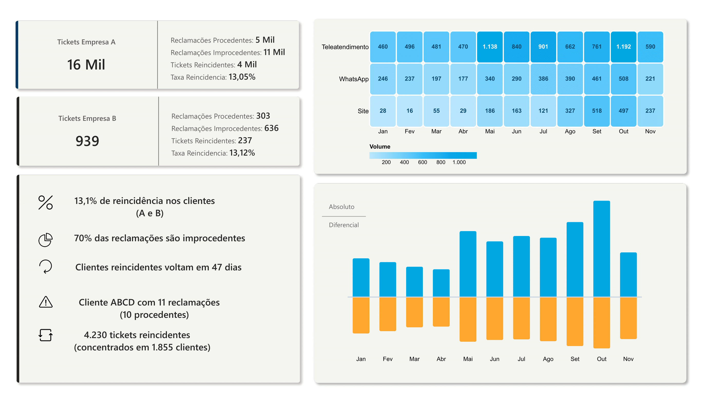

Análise de padrões de reincidência em reclamações de clientes

Projeto analítico focado na identificação de padrões de reincidência em reclamações de clientes.
Foram analisados 16.939 tickets com o objetivo de identificar clientes críticos, canais com maior reincidência e padrões temporais de reclamações.
O dataset contém registros históricos de tickets de reclamações provenientes de diferentes canais de atendimento.
O conjunto analisado contém 16.939 registros.
Taxa_Reincidencia =
DIVIDE([Tickets_Reincidentes],[Total_Tickets])